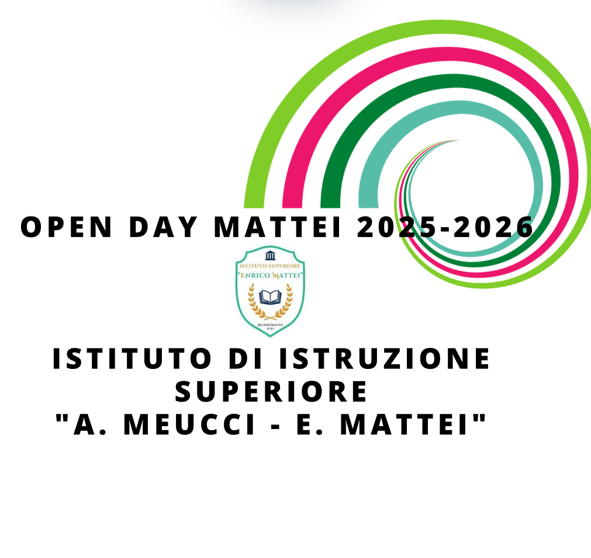

IIS Meucci–Mattei · Decimomannu
Il mio anno in Metodologie Operative
Quest'anno ogni attività ha costruito una competenza del tuo profilo professionale. Ripercorrila, fai il tuo bilancio e crea il tuo attestato di fine anno.
Competenza di indirizzo (SSAS)
Competenza di area generale
1. Il nostro percorso
Le tappe dell'anno e le competenze che hai costruito in ciascuna.
2. Il mio bilancio
Scrivi il tuo nome e valuta quanto ti senti sicuro/a in ciascuna competenza.
Come valutarti: 1 = solo se guidato/a · 2 = con qualche supporto · 3 = in autonomia · 4 = in autonomia e so spiegarlo agli altri (★ sull'attestato).
Nella stampa comparirà solo l'attestato.

IIS Meucci–Mattei · Decimomannu
Attestato di percorso
Indirizzo · Servizi per la Sanità e l'Assistenza Sociale (SSAS)
Metodologie Operative · a.s. 2025-2026
Si attesta che
—
della classe 3ª SB — Servizi per la Sanità e l'Assistenza Sociale — ha portato a termine il percorso del terzo anno di Metodologie Operative, lavorando sulle seguenti competenze del profilo professionale:
Competenze del profilo
Data
Il docente — Prof. Picconi
★ = competenza che lo studente sa spiegare agli altri